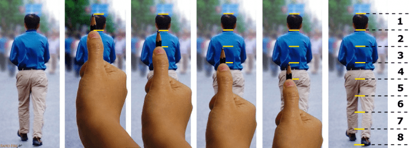

En esta lección aprenderás a dibujar una nariz realista, entendiendo su estructura y cómo sombrear para dar volumen y profundidad.La proporción se refiere simplemente a la relación de tamaño entre los objetos. Si quieres dibujar un sujeto o una escena con proporciones precisas, debes emplear las técnicas adecuadas y entrenar la vista con el tiempo.
Voy a presentarte algunas técnicas para medir y comprobar tu precisión. Al dibujar, es mejor usar tantas técnicas de medición como sea posible. Puedes usar estas técnicas en el orden que prefieras.
Levanta el lápiz justo delante del ojo sin doblar el codo. Si doblas el codo, será muy difícil mantener mediciones consistentes. Esto podría provocar errores de composición. Dado que el brazo gira desde el hombro, no desde el ojo, las mediciones no serán precisas durante todo el proceso. Para evitarlo, baja el ojo lo más cerca posible del hombro para obtener las mediciones más precisas de principio a fin.
Si observa la primera fila de imágenes, encontrará que las siguientes afirmaciones son verdaderas: